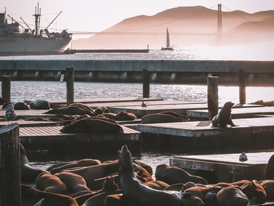

San Francisco is one of my favorite cities. Below are a few pictures of the city and the sea lions basking in the sun at Pier 39.
.jpg "SF City Night View")
San Francisco City Night View
.jpg "Waters edge at Golden Gate Bridge")
Waters edge at Golden Gate Bridge
I was told that the male sea lions come to Pier 39 to get away from the female sea lions.
The following is a link to learn more about sea lions at Pier 39. (Link to learn more)
Here is a link to live stream the sea lions at Pier 39. (Sea Lions)
Check out my first webpage!